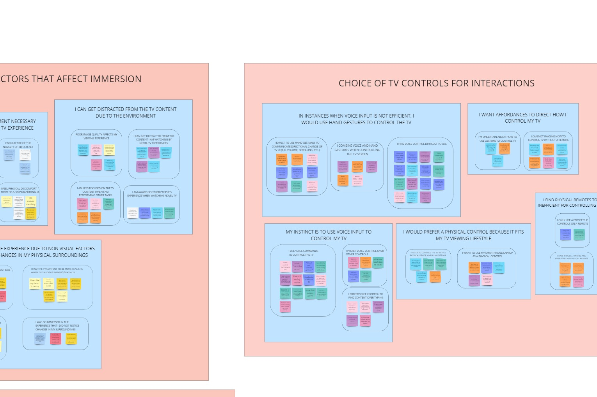
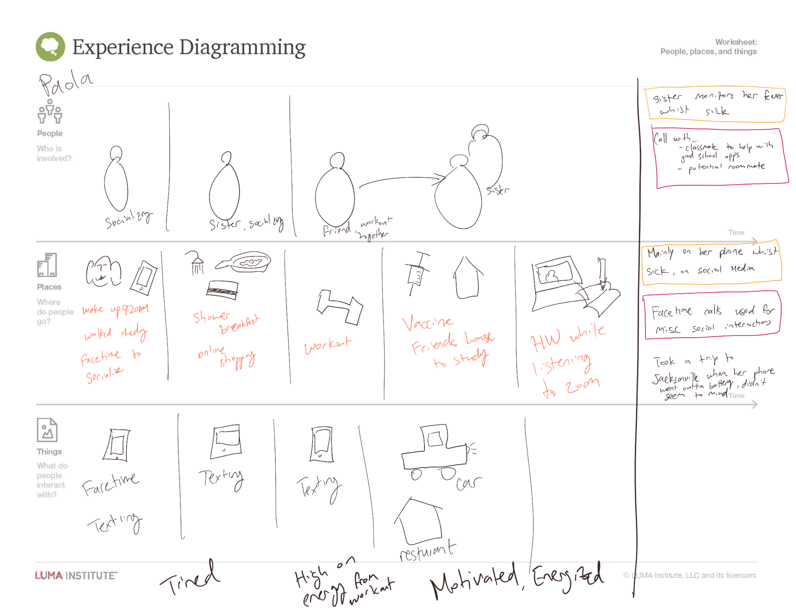
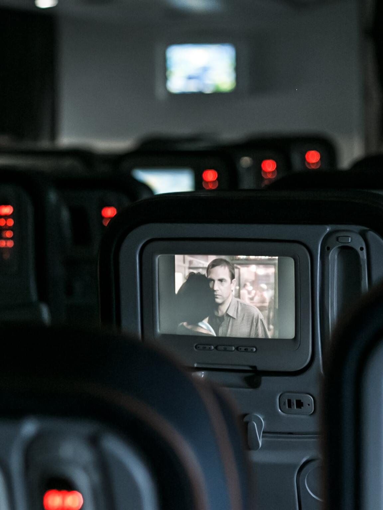
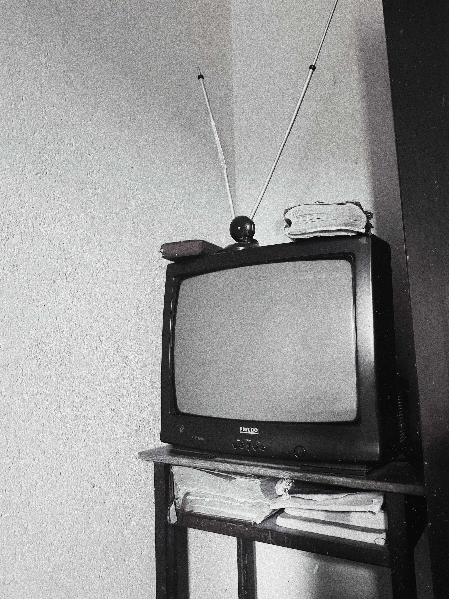
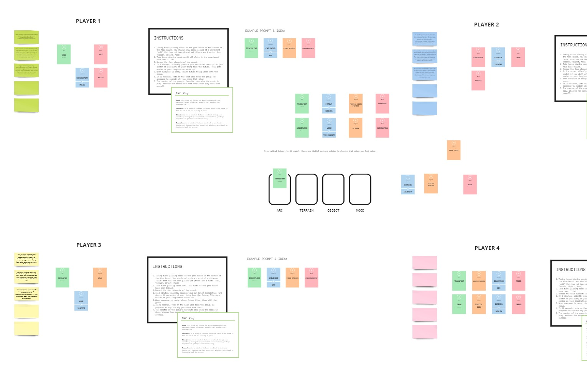

OvervieW
We found ourselves beginning our journey with an exceedingly ambiguous project description. Our goal was to employ user-centered design to speculate about novel user experiences in digital television that would satisfy user needs that are expected to emerge in the next 3 years. Our team used a variety of brainstorming activities, research methods, synthesis and design methodologies to narrow down our scope and get to the root of the problem we aimed to solve for. This section details brief summaries for each method and the most noteworthy insights and outcomes that have resulted.
Pretotype
Since the first television program to air in 1928, the television format and the consumption of digital content itself has undergone major shifts and now comprises an essential fabric in modern society. Coming into a project with such a broad aim, we needed to find a way to explore the space of digital television without losing sight of the bigger picture and wasting unnecessary time and resources.
We had recently had a conversation with our client discussing key assumptions around television that could be worth exploring. This got us thinking… Can we transport participants into a future state where these assumptions are reversed? Examples of such assumptions were the use of certain controls, the two dimensional format of TV and the fact that its static. We also wanted to explore factors such as immersion and social behaviors within this state.
We introduce our Pretotype, the Context Aware Moving Television, and the Visuo-auditory Immersion System. These were scenarios where the television has been freed from the bounds of a static two dimensional artifact and where the television is capable of providing enhanced 3D projection and surround sound audio.
affinity diagramming
Through affinity diagramming we’ve condensed the qualitative data from the sessions and interviews. What became apparent to us is that television has already broken the bounds of its traditional box within the living room wall, not just ergonomically, but also conceptually. While the reason people watch TV has not changed, the ability to have it within the palm of one’s hand has brought with it, a need for robustness and adaptability that users have come to expect.

Immersion is not a hook that can guarantee long-term values for users. The constraints that are necessitated by enhanced immersion was a big point of contention in an era where television is literally in the palm of one’s hand. People are not willing to go out of their way for alternate experiences that are inherently sedentary. The takeaway is that alternate experiences must be adapted to the existing lifestyle of the user.
In spite of the downsides of enhanced immersion that was brought up in the second scenario, it was revealed that people were willing to make strides to create alternate TV experiences if it was a part of a collective experience.This along with the general sentiment of TV’s role within social settings and as a social artifact drives home the point that the collective experience is majorly important when watching with other people.
People do not necessarily watch TV to watch TV. In many cases TV was simply the means to an end, and is most ubiquitously used in conjunction with tasks that do not require full attention, which is where it triumphs over other forms of digital entertainment. Why do people choose TV? Because they can switch their attention to and from it very easily.
contextual inquiry
It was at this point that we realized that there is more to the shift within the digital television landscape than just the delivery mechanism, but to the content itself. We also needed to understand what TV and digital content means to users in a real-life context.
With our new focus on digital content and its role in real-life routines, we began our deep exploration into how TV blends itself into people’s daily lives and how different content fit into varying contexts. We did so by conducting contextual inquiries and diary studies with a pool of participants with diverse demographic backgrounds. We then conducted 5-Whys sessions to get into the root of the problem. What we found was that many of our pretotype insights were reliably validated, and that there are surprising needs that are being specifically met with the use of digital content, especially within a content capturing and sharing perspective.
diary study
While conducting the contextual inquiries, we used the same participant pool to tackle the questions of "what are users’ current digital content consumption habits and experiences?" from a different angle by conducting a diary study in parallel. We had our users log in their daily activities over a 7-day period. The activities they reported including their interactions with TV, technologies, as well as activities outside of the digital space.
experience mapping

We also distilled our diary study via experience mapping in order to create an amalgamated environmental persona consisting of routines, moods, and context that will be used as a foundation for future design iterations.
Digital Content Permeates our Lfie
People consume digital content almost all the time as a secondary activity and crave the convenience of being able to access content anytime and anywhere when doing some mundane tasks. People multitask all the time, and so there is a need for the TV content to adapt based on users' context.

People also crave connection. They want to create a collective TV viewing experience so they can build connections with one another. When viewing in groups, users care more about socializing and talking about the show over picking the content they would want to watch by themselves. When in social context, there is a need for the TV content to adapt the needs of multiple parties.
People use the TV as an emotional tool to help them cope with stress and frustration. Many users pick what to play based on the mood feelings they are in. Understanding these experiences raised the question for us, Can TV and digital content be used to regulate people's emotions?
People want to “mold” the content they capture to present their stories for certain audiences. Despite frequently capturing moments of his or her personal life, users were very selective about what to post on social media because it would be open for all to see it. As much as they would like to share pictures on Instagram, they abstain to avoid certain audiences.
People want to use content capturing to escape from current reality by reflecting or re-experiencing their past. Some users consciously posted content aiming for mass responses, others would much rather keep captured moments to themselves or shared it with a select group of people. We see that content creation becomes a more personal experience.

conceptual prototype
Beyond understanding the ebb and flow of digital content in the current state, we also have to envision what it would be like in the future. If there is one thing we know about the incorporation of technology when transitioning into the future, it's that it is not enough for it to push the boundaries of what’s possible, but to be the solution that people are ready to embrace. Inspired by the work from our faculty advisors, we explored the future of TV and synthetic content through a future-thinking game, where participants were asked to collaboratively define a future scenario and come up with possible items that would exist from that future.

Between these group sessions, we offered participants the opportunity to vote for the best idea(s), judged based on how well it fits the prompt and how likely it will occur in the future scenario. We also facilitated additional post-game discussions to discuss why participants selected certain ideas, to glean their views and thoughts of the future they had defined.
People use content to indulge in their emotions. Across all our game sessions, participants were eager to immerse themselves in virtual environments based on the mood that they were in. We realized that people let their emotions dictate the content they consume and create, and they anticipate that content would further regulate their mood in the future.
Stepping into Another's Shoes
People want to experience content from a different perspective. Participants envisioned themselves reliving stories from a first person perspective, or be put into a simulation environment to better learn at school. Whether it is to empathize with fictional characters or to enhance their learning, people have expressed a desire to step into one’s shoes and experience content differently.
Anticipations by Intellegent Systems
People envisioned intelligent systems that could anticipate their needs. Especially in relation to content consumption, there remains this friction between what the user wants and what TVs can do automatically in response to that. People are hopeful for a more intelligent system that can accurately infer their needs, and adapt the content accordingly.